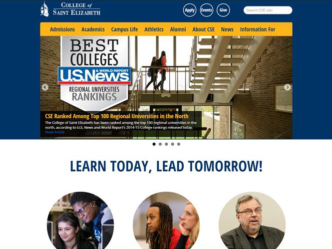
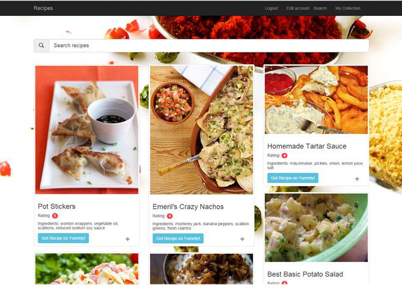
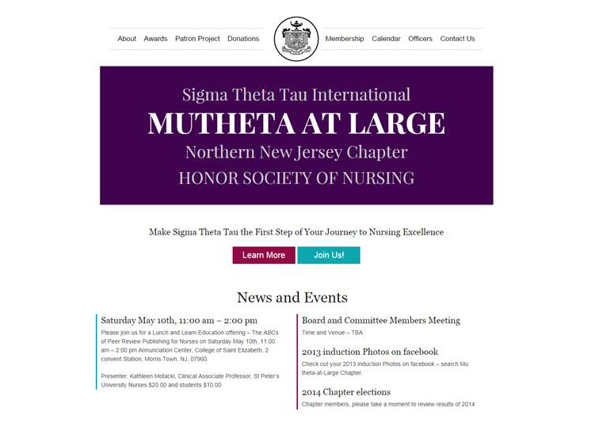
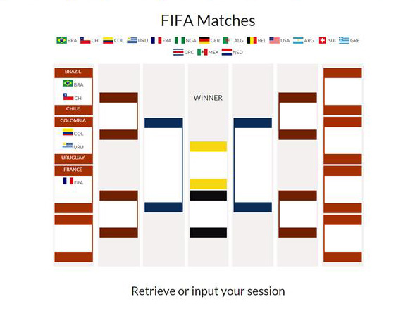

Lei Zhu
Joining the journey to become a professional full-stack web developer
FEATURED PROJECTS

CSE WordPress Intranet
WordPress
Skeleton
JQuery
PHP
Converted College of Saint Elizabeth website to a WordPress site with custom theme and widgets
Github

Lazy Recipe
Rails
Bootstrap
JQuery
API
JSON
My first Rails project. Search recipes by ingredients, ingredients are sorted from the least to the most.
Github
Demo

Mu Theta At Large
WordPress
Skeleton
JQuery
My first WordPress project. Redesigned a new resonsive WordPress theme and converted a flash based site to a WordPress site.
Github
Demo

FIFA Matches
JS
Skeleton
A drag and drop FIFA soccer game. Drag and drop the coutry icons and output and retrive result through a generated json object.
Github

WordPress Twitter Plugin
WordPress
Plugin
API
A WordPress twitter plugin. Users can input Authentication keys to display their tweets from twitter.
Github

CSE Official Website
dotCMS
JQuery
Skeleton
I redesigned and created the front-end of the College of Saint Elizabeth's official website. The previous site is in Flash.
Demo
ABOUT ME
I'm passionate about web design and web development, and am currently working as a junior front-end web developer. Looking forward to joining the journey to become a professional full-stack web developer.